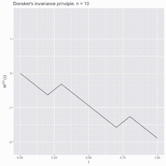

Thesis 11: The functional CLT (Donsker's invariance principle)
The Functional Central Limit Theorem (CLT) and Donsker's Invariance Principle provide an explenation of the asymptotic behavior of functionals of random processes.
Donsker's Invariance Principle states that the distributional limit of suitably normalized random walks in function spaces is a Brownian motion.
It is as an extension of the central limit theorem.

Consider a sequence of independent and identically distributed (i.i.d.) random variables with a mean of 0 and variance of 1, denoted as \(X_1, X_2, X_3, \ldots\) . Let \(S_n = \sum_{i=1}^n X_i\) represent the stochastic process known as a random walk. The diffusively rescaled random walk, denoted as \(W^{(n)}(t)\) and defined for \(t \in [0,1]\), is given by \(\frac{S_{\lfloor nt\rfloor}}{\sqrt{n}}\).
The central limit theorem asserts that as \(n\) tends to infinity, \(W^{(n)}(1)\) converges in distribution to a standard Gaussian random variable \(W(1)\). Donsker's invariance principle extends this convergence to the entire function \(W^{(n)} := (W^{(n)}(t))_{t\in [0,1]}\). In a more precise formulation, Donsker's invariance principle, states that as \(n\) approaches infinity, the random function \(W^{(n)}\) converges in distribution to a standard Brownian motion \(W := (W(t))_{t\in [0,1]}\), where both are considered as random variables in the Skorokhod space \(\mathcal{D}[0,1]\).
Proof
The main idea is to embed the sequence of random variables \(X_1, X_2, \ldots, X_n\) in the same probability space as a Brownian motion, ensuring that the scaled partial sums \(S_n^*\) closely resemble the behavior of a scaled Brownian motion. The rough sketch proceeds as follows:
Start with a standard Brownian motion \(B_t\) and define the stopping times \(T_n\) at which \(B_t\) intersects the horizontal integer lines \(\{B_t = n : n \in \mathbb{Z}\}\).
Formally, set \(T_1 := \inf\{t : |B_t| = 1\}\) and \(T_{n+1} := \inf\{t > T_n : |B_t - B_{T_n}| = 1\}\), where \(T_n\) is a stopping time.
Utilize Skorokhod embedding, which asserts the existence of a stopping time \(T\) such that \(B_T\) follows the law of a random variable \(X\) with \(E[X] = 0\), \(E[X^2] < \infty\), and \(E[T] = E[X^2]\).
Let \(X\) be a real random variable with mean 0 and variance 1. Define \(T_1\) such that \(E[T_1] = 1\) and \(B_{T_1}\) has the same distribution as \(X\).
Similarly, define \(T_0^2\) with \(E[T_0^2] = 1\) and \(B_{T_0^2}\) having the same distribution as \(X\). Set \(T_2 = T_1 + T_0^2\) with \(E[T_2] = 2\).
Continue this process to inductively define a sequence of stopping times \(T_1 < T_2 < \ldots < T_n\) such that \(S_n = B_{T_n}\), meaning the Brownian motion with stopping times \(T_n\) has the same distribution as the simple random walk (SRW) described by \(S_n\).
Neglecting technical details, having found a suitable embedding with the desired properties, the key result is that, after rescaling our Brownian motion, the difference \(\sqrt{n} \left(B_{nt}/\sqrt{n} - S_n^*\right)\) becomes negligible as \(n \to \infty\). This implies the convergence in distribution of the scaled empirical process to a standard Brownian bridge.
Simulation
We can observe a simulation of random walks in the Homework 7
Bibliography:
Lecture notes from the lesson of the statistics course